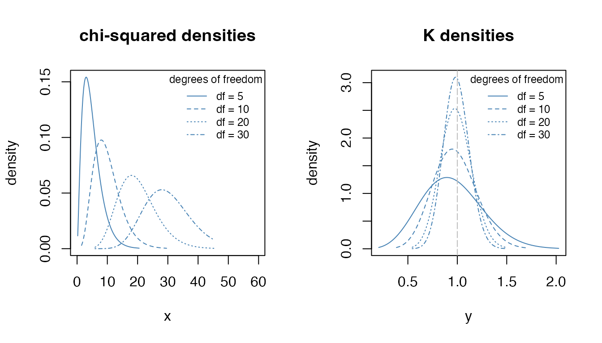
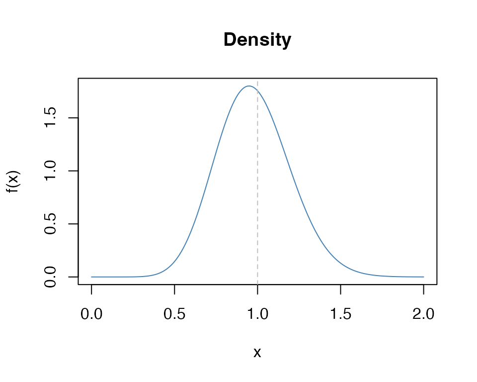
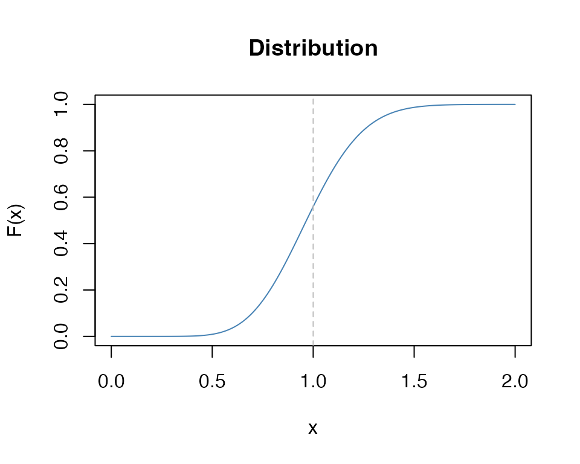

Definition
Suppose is a Chi-squared random variate on degrees of freedom. Then the distribution of is the Kay distribution on degrees of freedom, written as Its density is
The density has some very attractive features over the density:
- has a much more symmetric density than had the , for any ;
- like a density a density, as becomes more symmetric and nearly normally distributed but does both faster than a ;
- as , the density concentrates around the value , rather than heading off to like the ;

As m increases, Km has better properties
These values were calculated using the dkay(...) density
function. For example, dkay(1.0, df=10) = 1.7546737.
Normal theory relations
Perhaps the most obvious relation between a normal random variate and a is that if , then , the half-normal.
More important in applications is that distribution of the estimator of the sample standard deviation is proportional to a . To be precise, if are independent and identically distributed as random variates, with realizations and the usual estimates and , then the corresponding estimators and are distributed as The latter shows that is used for inference (e.g. tests and confidence intervals) about .
This is handy because the quantiles vary much less than do those of . For example, condider the following table of the cumulative distribution.
| df | p=0.05 | p=0.5 | p=0.95 |
|---|---|---|---|
| 1 | 0.0627068 | 0.6744898 | 1.959964 |
| 2 | 0.2264802 | 0.8325546 | 1.730818 |
| 3 | 0.3424648 | 0.8880642 | 1.613973 |
| 4 | 0.4215220 | 0.9160641 | 1.540108 |
| 5 | 0.4786390 | 0.9328944 | 1.487985 |
| 6 | 0.5220764 | 0.9441152 | 1.448654 |
| 7 | 0.5564364 | 0.9521263 | 1.417601 |
| 8 | 0.5844481 | 0.9581311 | 1.392269 |
| 9 | 0.6078297 | 0.9627987 | 1.371090 |
| 10 | 0.6277180 | 0.9665308 | 1.353035 |
| 15 | 0.6957463 | 0.9777136 | 1.290886 |
| 20 | 0.7365735 | 0.9832962 | 1.253205 |
| 25 | 0.7644974 | 0.9866425 | 1.227232 |
| 30 | 0.7851255 | 0.9888719 | 1.207932 |
| 35 | 0.8011601 | 0.9904636 | 1.192858 |
| 40 | 0.8140839 | 0.9916570 | 1.180662 |
Unlike the distribution, the quantiles in this table stabilize, allowing being not a bad rule of thumb for a probability of the ratio .
These values were calculated using the qkay(...)
quantile function. For example, qkay(0.05, df=5) =
0.478639. These would be used to construct interval estimates for
.
To get observed significance levels, the cumulative distribution
function pkay(...) would be used. For example,
SL = 1- pkay(1.4, df=10) = 1 - 0.9667287 =
0.0332713.
The Student t distribution
For the standard normal theory, the Student distribution can be defined as follows. If and is distributed independently of , then the ratio which is fairly easy to remember.
For the estimators from the above model is used to construct interval estimates and tests for the value of the parameter .
The functions
As with every other distribution in R four functions are
provided for the
distribution. These are
-
dkay(x, df=m, ...)which evalutes the density of at , -
pkay(x, df=m, ...)which evalutes the distribution of at , -
qkay(p, df=m, ...)which evalutes the quantile of at the proportion , -
rkay(n, df=m, ...)which generates pseudo-random realizations from .
The parameters in the ellipsis include a non-centrality parameter.
All functions rely on the corresponding
functions in base R.
We briefly illustrate each below.
The density dkay(x, df, ...)
x <- seq(0,2,0.01)
plot(x, dkay(x, df=10), type="l", col="steelblue",
main="Density", xlab="x", ylab="f(x)")
abline(v=1.0, lty=2, col="grey")
The cumulative distribution function
pkay(x, df, ...)
x <- seq(0,2,0.01)
plot(x, pkay(x, df=10), type="l", col="steelblue",
main="Distribution", xlab="x", ylab="F(x)")
abline(v=1.0, lty=2, col="grey")